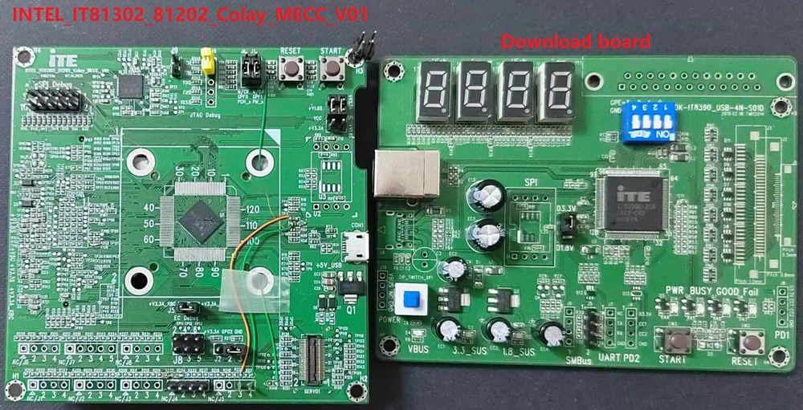
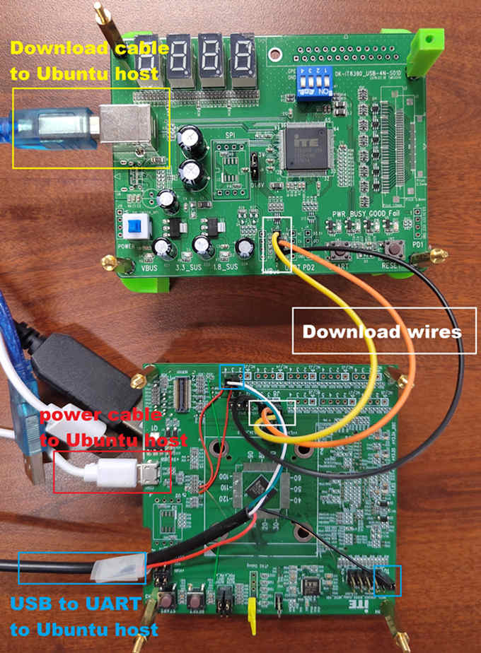
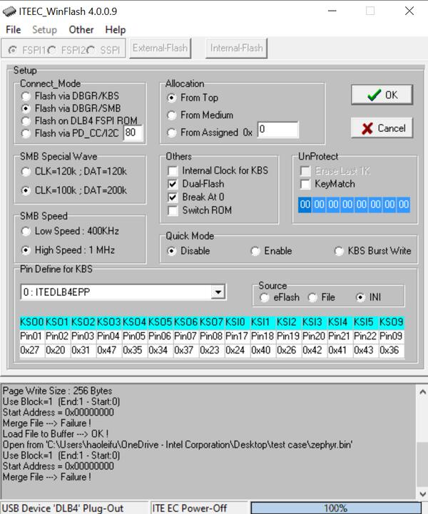
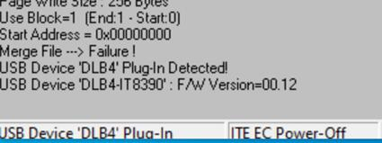
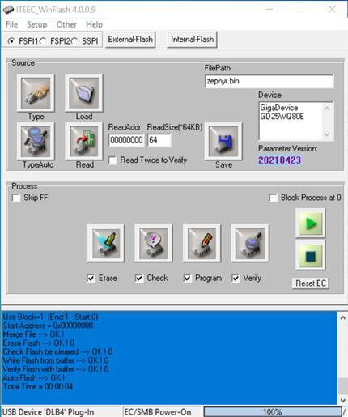
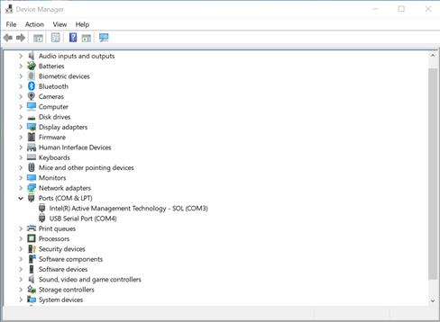

IT8XXX2 series
Overview
The IT8XXX2 is a 32-bit RISC-V Micro-controller. And a highly integrated embedded controller with system functions. It is suitable for mobile system applications. The picture below is the IT81302 MECC board (also known as it8xxx2_evb) and its debug card.

To find out more about ITE, visit our World Wide Web at:ITE’s website [1]
Hardware
The IT8XXX2 series contains different chip types(ex, it81302, it83202), and they support different hardware features. Listing the IT81302 hardware features as following:
RISC-V RV32IMAFC instruction set
4KB instruction cache size
60KB SDRAM in total
Built-in 32.768 kHz clock generator
PWM, eSPI, LPC, FLASH, UART, GPIO, Timer, Watchdog, ADC, JTAG
6 SMBus channels, with 3 DMA controllers, compatible with I2C
SPI master/slave
USB Type-c CC Logic
USB Power Delivery
Support KB scan
Supported Features
The it8xxx2_evb board supports the hardware features listed below.
- on-chip / on-board
- Feature integrated in the SoC / present on the board.
- 2 / 2
-
Number of instances that are enabled / disabled.
Click on the label to see the first instance of this feature in the board/SoC DTS files. -
vnd,foo -
Compatible string for the Devicetree binding matching the feature.
Click on the link to view the binding documentation.
it8xxx2_evb/it81302bx target
Type |
Location |
Description |
Compatible |
|---|---|---|---|
CPU |
on-chip |
ITE IT8XXX2 RISC-V CPU1 |
|
ADC |
on-chip |
ITE it8xxx2 ADC1 |
|
Counter |
on-chip |
ITE IT8XXX2 counter1 |
|
Cryptographic accelerator |
on-chip |
ITE IT8XXX2 Crypto SHA accelerator1 |
|
ESPI |
on-chip |
ITE IT8XXX2 ESPI controller1 |
|
Flash controller |
on-chip |
ITE IT8XXX2 flash memory1 |
|
GPIO & Headers |
on-chip |
ITE IT8xxx2 GPIO13 |
|
on-chip |
ITE IT8xxx2 Kscan Pins as GPIO3 |
||
I2C |
on-chip |
ITE it8xxx2 I2C3 |
|
on-chip |
ITE enhance I2C3 |
||
Input |
on-chip |
ITE it8xxx2 keyboard matrix controller1 |
|
Interrupt controller |
on-chip |
ITE Wake-Up Controller (WUC) mapping child node1 |
|
on-chip |
ITE Wake-Up Controller (WUC)16 |
||
on-chip |
ITE Interrupt controller1 |
||
LED |
on-board |
Group of GPIO-controlled LEDs1 |
|
Memory controller |
on-chip |
ITE, IT8XXX2 Battery Backed RAM node1 |
|
on-chip |
ITE IT8XXX2 Instruction Local Memory1 |
||
MTD |
on-chip |
Flash node1 |
|
PECI |
on-chip |
ITE it8xxx2 PECI1 |
|
Pin control |
on-chip |
The ITE IT8XXX2 pin controller is a node responsible for controlling pin function selection and pin properties1 |
|
on-chip |
ITE IT8XXX2 Pin Controller16 |
||
PWM |
on-chip |
ITE, it8xxx2 PWM prescaler node1 |
|
on-chip |
|||
Sensors |
on-chip |
||
Serial controller |
on-chip |
ns16550 UART2 |
|
on-chip |
ITE, IT8XXX2-UART node2 |
||
SHI |
on-chip |
ITE IT8XXX2 Serial Host Interface (SHI)1 |
|
SPI |
on-chip |
IT8XXX2 SPI1 |
|
SRAM |
on-chip |
Generic on-chip SRAM1 |
|
Tachometer |
on-chip |
||
Timer |
on-chip |
ITE Ext-timer1 |
|
USB Type-C |
on-chip |
ITE it8xxx2 USB-C Power Delivery port2 |
|
Watchdog |
on-chip |
ITE watchdog timer1 |
Hardware reworks
Before using the it8xxx2_evb, some hardware rework is needed. The HW rework guide can be found in ITE’s website. https://www.ite.com.tw/upload/2024_01_15/6_20240115100309cgdjgcLzX3.pdf
Programming and debugging on it83202
In order to upload the application to the device, you’ll need our flash tool and Download board. You can get them at: ITE’s website [1].
Wiring
Connect the Download Board to your host computer using the USB cable.
Connect the it8xxx2_evb to your host computer or a 5V1A USB power supply.
Connect the Download Board J5 to J8 on the it8xxx2_evb board.
Connect the USB to UART wire to it8xxx2_evb.

Note
Be careful during connection! Use separate wires to connect I2C pins with pins on the it8xxx2_evb board. Wiring connection is described in the table below.
J5 Connector
it8xxx2_evb J8 Connector
2
1
3
3
4
5
For USB to UART cable, connect the it8xxx2_evb as below:
USB to UART cable
it8xxx2_evb J5 Connector
RX
J5.3
TX
J5.4
GND
eSPI Debug.10
Building
Build Hello World application as you would normally do (see :Zephyr Getting Started Guide [2]):.
# From the root of the zephyr repository west build -b it8xxx2_evb samples/hello_world
The file
zephyr.binwill be created by west.
Flashing
Windows
Use the winflash tool to program a zephyr application to the it8xxx2 board flash.
Open winflash tool and make sure the order you open the switch is right. First, turn on the Download board switch. Second, turn on the it8xxx2_evb board switch. Then, configure your winflash tool like below.


Using winflash tool flash zephyr.bin into your ITE board. First, click
Loadbutton and select your zephyr.bin file. Second, clickrunto flash the image into board.
At this point, you have flashed your image into ITE board and it will work if you turn on ITE board. You can use a terminal program to verify flashing worked correctly.
For example, open device manager to find the USB Serial Port(COM4) and use your terminal program to connect it(Speed: 115200).

Turn on the it8xxx2_evb board switch, you should see
"Hello World! it8xxx2_evb"sent by the board. If you don’t see this message, press the Reset button and the message should appear.
Ubuntu
Run your favorite terminal program to listen for output. Under Linux the terminal should be
/dev/ttyUSB0. Do not close it.For example:
$ minicom -D /dev/ttyUSB0 -b 115200
Open a second terminal window and use linux flash tool to flash your board.
$ sudo ~/itetool/ite -f build/zephyr/zephyr.bin
Note
The source code of ITE tool can be downloaded here: https://www.ite.com.tw/upload/2024_01_23/6_20240123162336wu55j1Rjm4.bz2
Split first and second terminal windows to view both of them. You should see
"Hello World! it8xxx2_evb"in the first terminal window. If you don’t see this message, press the Reset button and the message should appear.
Debugging
Supporting uart debug, currently.
Troubleshooting
If the flash tool reports a failure, re-plug the 8390 Download board or power cycle the it8xxx2_evb board and try again.